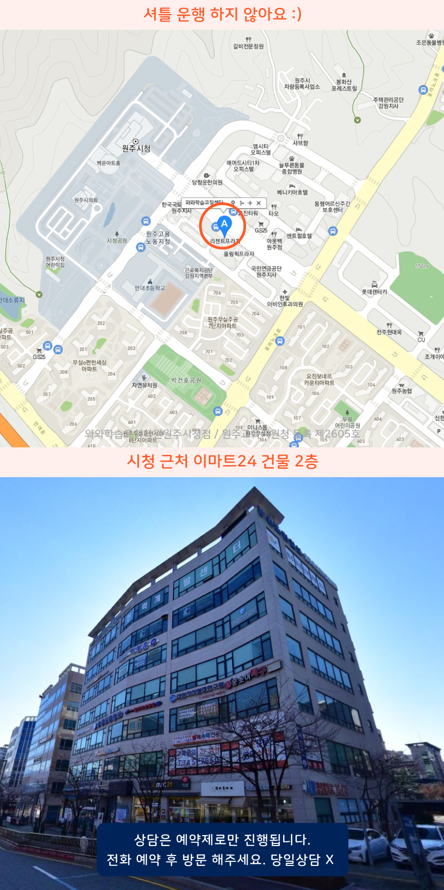

Area
단계동 중학생학원
단계동과 무실동 인근에서 중학생학원과 중등학원을 찾는 분들이 많습니다. 단계동에서는 수업 진도만큼이나 과목별 이해도를 점검할 수 있는 방식이 필요합니다. 무실동 쪽은 수업 후 복습 계획을 어떻게 관리하는지 상담에서 확인해 보시면 좋아요. 흥업과 원주시청 가까운 곳은 통학 시간을 고려해 수강 시간대를 조정하면 부담이 덜합니다.
단계동 중학생학원에서 영어·수학·국어 내신대비를 학교 수업 흐름에 맞춰 체계적으로 준비합니다. 개별진도 학습관리와 학습코칭으로 문제풀이·오답 점검을 하며 실력을 꾸준히 쌓아가요.
무료 레벨테스트 신청하기Area
단계동과 무실동 인근에서 중학생학원과 중등학원을 찾는 분들이 많습니다. 단계동에서는 수업 진도만큼이나 과목별 이해도를 점검할 수 있는 방식이 필요합니다. 무실동 쪽은 수업 후 복습 계획을 어떻게 관리하는지 상담에서 확인해 보시면 좋아요. 흥업과 원주시청 가까운 곳은 통학 시간을 고려해 수강 시간대를 조정하면 부담이 덜합니다.
Schools
단계동 중등학원은 육민관중과 평원중 대비로 내신 개념을 단원별로 다지고 대성고 진학에 필요한 서술형을 반복 훈련하며 수업 후 오답정리와 주간 실전문제로 약점을 보완합니다.
Academy
원주시청 인근이나 무실동, 단계동에서 공부를 시작한 학생들이 비슷하게 겪는 문제는 공부량은 늘었는데 성적이 제자리인 경우예요. 보통은 과제 시간을 정해두지 않거나, 수업 내용을 확인하는 과정 없이 다음 단원으로 넘어가서 누적된 빈칸이 생깁니다. 특히 무실초나 솔샘초, 흥업초, 만대초 출신 학생들은 개념 이해는 빠르지만 문제 풀이의 근거를 정리하지 못해 같은 유형을 반복해 틀리곤 해요.
단계동의 중학생학원에서는 단순 진도보다 학습 습관을 먼저 잡는 편이 필요합니다. 예를 들어 매일 같은 시간에 계획표를 작성하고, 이해 확인 문제와 오답 기록을 묶어 다음 수업 전 점검을 하게 하면 반복 실수가 줄어듭니다. 단계동의 중등학원에서는 수업 후 20분 안에 오늘 내용의 핵심을 문장으로 요약하고, 다음 주 시험 범위와 연결해 두는 방식이 도움이 됩니다.
중간고사 전에 할 일은 평소와 다르지 않지만, 비중이 달라져야 해요. 평원중이나 육민관중, 흥업초 졸업 뒤 중등 과정에서 흔히 관찰되는 건 영어 독해나 수학 계산이 “대충 맞힌 것”으로 남는 문제예요. 대성고나 삼육고, 육민관고 준비까지 이어질수록 과목별로 오답의 원인을 분류하고 같은 실수가 언제 다시 나오는지 확인하는 관리가 중요해집니다.
학원을 고를 때는 첫째, 숙제 점검이 시간만 보고 끝나는지, 오답과 계획이 다음 학습으로 이어지는지 확인하세요. 둘째, 수업 방식이 학생별로 다른 근거를 갖고 있는지 봐야 합니다. 셋째, 중등에서 고등으로 넘어갈 때 시험 일정과 학습 전략이 어떻게 연결되는지 설명할 수 있는지도 체크하면 시행착오를 줄일 수 있어요.

Programs

목표 점수와 시험 일정을 기준으로 주간 학습량을 설계하고, 매일 실천 가능한 플래너 루틴을 잡아줍니다.

학생별 이해도에 맞춘 개념 설명, 유형 적용, 반복 훈련, 오답 정리로 부족한 단원을 보완해나갑니다.

하원 이후에도 과제 수행률 확인과 학원 밖 공부 습관까지 이어갑니다.


자기주도학습력을 형성 시킬 수 있도록 플랜, 학습, 숙제관리가 들어갑니다.

Map

Apply
순차적으로 연락드려 예약 도와드립니다.
Guide
| 횟수 | 초등 | 중등 | 고등 |
|---|---|---|---|
| 주 5회 | 339,000원 | 336,000원 | 419,000원 |
| 주 4회 | 279,000원 | 301,000원 | 344,000원 |
| 주 3회 | 219,000원 | 236,000원 | - |
| 횟수 | 초등 | 중등 | 고등 |
|---|---|---|---|
| 주 5회 | 389,000원 | 416,000원 | 469,000원 |
| 주 4회 | 319,000원 | 341,000원 | 384,000원 |
| 주 3회 | 249,000원 | 266,000원 | - |
학년, 과목, 수업 시수, 지역에 따라 수업료가 달라질 수 있습니다.
학교별 시험 범위와 출제 경향을 고려해 핵심 개념과 주요 문제 유형을 집중적으로 학습합니다. 객관식뿐 아니라 서술형 평가까지 꼼꼼하게 준비하며, 반복되는 오답과 취약 단원을 점검해 안정적인 내신 성적을 목표로 지도합니다.
영어는 어휘·문법·독해를 균형 있게 학습하고, 수학은 개념 이해부터 응용 문제까지 단계적으로 진행합니다. 국어는 문학과 비문학, 문법을 중심으로 지문 분석 능력을 기르며 학생별 부족한 영역을 보완합니다.
중학교 과정에서 반드시 익혀야 할 핵심 개념을 정리하고 고등학교 학습에 필요한 기초 역량을 키워갑니다. 학생의 이해도와 학습 속도를 고려해 심화 학습과 선행학습을 조절하며 고등 과정으로 자연스럽게 연결될 수 있도록 돕습니다.